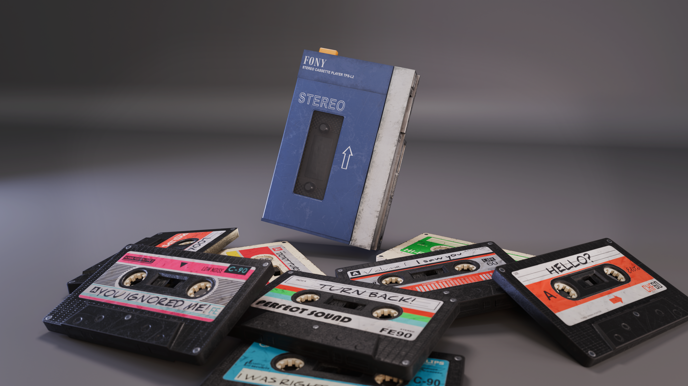

Prop Art — Environment
Walkman & Cassettes
VR-ready props created for Please Wave Back, designed for clear close-range viewing on Meta Quest 3.
Overview
Created for Please Wave Back VR, the Walkman and cassette props were built to withstand close headset inspection while remaining suitable for a real-time VR environment. The Walkman uses its own texture set, while the cassette atlas packs eight distinct cassette designs into a single material. This reduces material overhead, improves batching and makes efficient use of UV space, while maintaining visual variety across the props.
"Separate Walkman and cassette texture sets keep the asset setup clear, while one shared cassette atlas supports eight distinct designs."
Walkman Gallery
Selected renders of the Walkman and cassette props.

Technical breakdown
Technical breakdowns covering modelling, UVs, materials, texturing, optimisation and real-time presentation.

Wireframe
The wireframe shows the model structure and the forms that define the Walkman and cassette silhouettes. The assets were prepared for close-up VR presentation, with geometry suited to a real-time project.

Game Render
The in-game view demonstrates the cassette at its intended scale within the VR experience. Close headset viewing places greater emphasis on texture quality, with the base colour, roughness and normal maps working together to define the cassette's surface properties, material response and finer details. Particular attention was given to maintaining surface definition under real-time lighting without relying on excessive geometry.

Walkman Texture Sets
The Walkman's texture breakdown shows its base colour, normal, metallic and roughness maps alongside a clay render. The normal map adds surface definition; roughness controls how each surface reflects light. Carefully varied roughness helps separate materials and gives the prop a more convincing, realistic finish.

Cassette Texture Sets
Eight cassette designs share a single material and texture set, reducing material overhead while retaining visual differences across each prop. The texture breakdown shows the base colour, normal, metallic and roughness maps alongside a clay render. Roughness variation helps distinguish the surface response of the plastic casing and printed labels, creating believable differences in sheen. The UV layout also demonstrates overlapping UVs, allowing multiple cassette designs to share the same texture space and reduce texture memory usage.